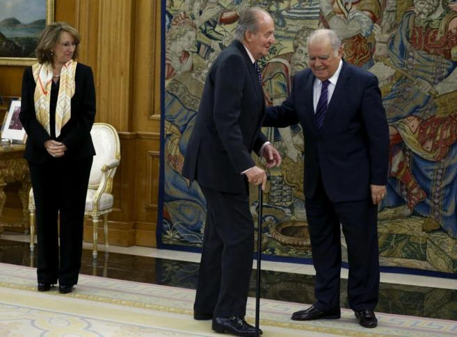
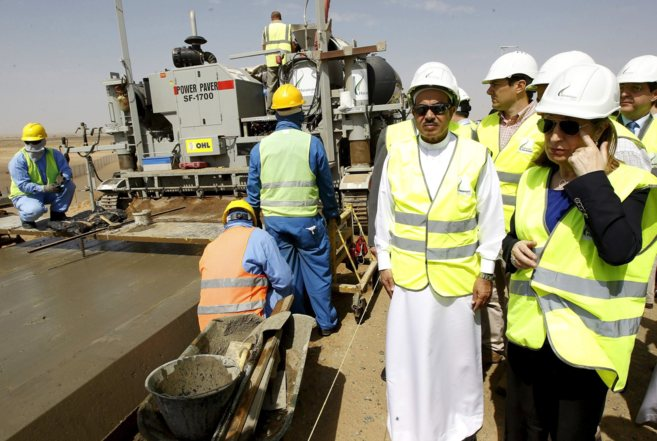

Bruselas pedirá explicaciones a la Junta por el supuesto fraude en las ayudas
La Comisión Europea quiere saber si el posible fraude afectan al uso de fondos de la UE, según ha explicado el portavoz de Empleo, Emer Trayno
Misión Península Arábiga: el Rey en busca de contratos y prestigio
ANA ROMER/ABU DABI. Don Juan Carlos, de 76 años, ha despegado esta mañana de Torrejón de Ardoz en un Airbus 310 rebosante de acompañantes oficiales: cuatro ministros (Fomento, Defensa, Exteriores e Industria); dos secretarios de Estado (Comercio e Infraestructuras); el jefe de la Casa, Rafael Spottorno (con rango de ministro); una quincena de altos ejecutivos (ACS, Indra, OHL, Airbus, Técnicas Reunidas, FCC, CAF-Talgo, Abengoa, Cepsa, Ferrovial, Navantia, Sener, Ineco, Constructora San José y Typsa), y cuatro periodistas de medios públicos.
El Rey viajará a Emiratos Árabes Unidos y a Kuwait del 13 al 16 de abril

El rey con el ministro de Asuntos Exteriores
EUROPA PRESS/MADRID .El Rey viajará entre los próximos 13 a 16 de abril a los Emiratos Árabes Unidos y Kuwait, en el marco de una serie de viajes que, a lo largo del trimestre, incluirá a todos los países del Consejo de Cooperación del Golfo, ha anunciado el Ministerio de Asuntos Exteriores y de Cooperación.
Renfe y Adif, a por otro gran contrato en Arabia Saudí

Obra de renfe y adif en Arabia Saudí
CÉSAR URRUTIA/MADRID. El Ministerio de Fomento trabaja para aumentar la carga de trabajo de Renfe y Adif en Arabia Saudí, donde ambas participan en la construcción del AVE del desierto, el mayor concurso público ganado nunca por un consorcio español. Las dos empresas públicas optarán el próximo 13 de abril a hacerse cargo de un nuevo proyecto en el país para operar y gestionar una red de ferrocarril.